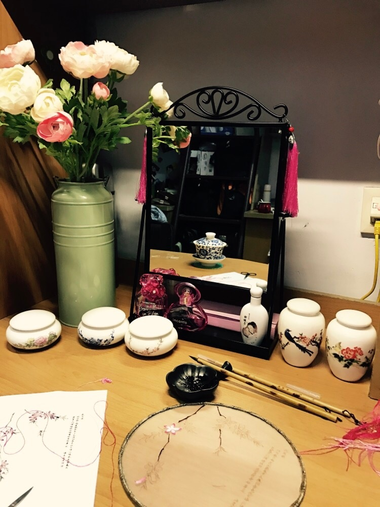
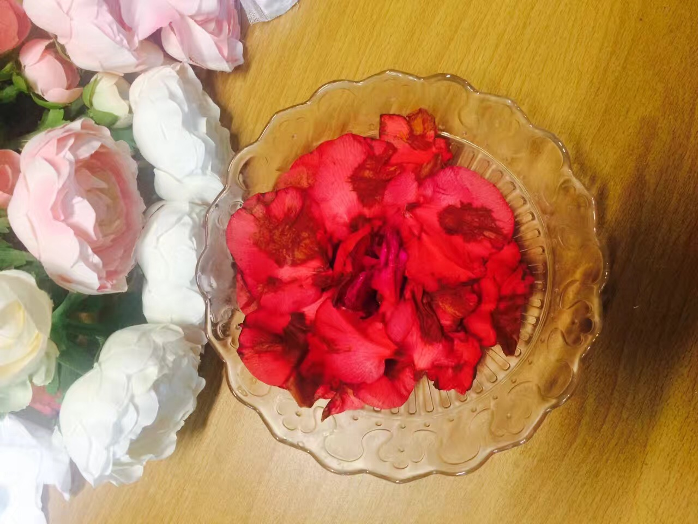

正文: 不请自来，多图预警
我认识一个姑娘，她叫「公子」。
公子是一个兴趣爱好有点儿特别的姑娘，今天，我就来说一说她的故事。
1、
那天傍晚，夕阳斜照，温暖又灿烂。似乎很久没有见这样的好天气了，心中甚是愉快。思忖晚上吃什么，不如自己动手来做，于是翻箱倒柜，找到一些材料。
泡好茶，摆好花，抬头一望，夜色已温柔。倏地想起苏轼的那首《行香子》
「 清夜无尘，月色如银。酒斟时，须满十分。浮名浮利，虚苦劳神。叹隙中驹，石中火，梦中身。
虽抱文章，开口谁亲。且陶陶，乐尽天真，几时归去，作个闲人。对一张琴，一壶酒，一溪云。 」
这是「茶泡饭」，算不得标准的茶泡饭，公子自创的做法，只是拿来讨好自己、娱乐一下罢了。
说起茶泡饭，公子已经做过好几次了。她觉得这玩意儿若是做好了，便会沁人心脾、口齿留香，好在每次她做茶泡饭，总是成功的。


有时，自己做了凉面，也是别有一番乐趣
2、
多日以来，公子因琐事不能静心，遂去寺庙献上一对香烛，祈求心安神定。行至一树荫庇护处，与一师父擦肩。这位师父叫住公子，只觉颇有眼缘，赠公子两本佛经，为初涉佛学弟子诵读。公子拜谢师父，得知师父称号「果弥」。
那日，公子回到家中，翻开佛经，诵读起来。觉得安心了许多。
「 花看天上祈庸福，月坠怀中听幻影。
一卷金经香一炷，忏君自忏法无边。 」

3、
平日里消遣，很是单调。要么写写字，要么喝喝茶，要么做几样点心，还有一样，便是刺绣。

4、
许多人都知道公子每天都写字，可是，这里面却又有许多的故事。故事删。
偶尔还会抄些佛经、唐诗宋词之类
有时候写好字，也会给朋友寄过去一些祝福。还会带上护身符。

感谢@蘧庐主人霍重庆霍先生，给我寄来佛经。感谢霍先生的字。
5、
公子养了一些花花草草，看着花瓣白白凋落，心中实在不忍，于是把花瓣搜集起来，查古籍，做胭脂。

6、
其实，公子挺喜欢画原子结构的。有一次画C60和C70，公子是全班第一个做完的。
7、
一生只为花低头。

8、
公子极爱听戏，也爱看展子，公子唱歌也很好听。
9、
公子的生活，很真实，很平凡。公子在这里结交了许多好友，学习到很多东西，受到了许多的帮助。
公子有一个隐居两年的打算，今年可能就会找一个靠海的小城市独居。很安逸。
「 书来恳款见君贤，我欲收狂渐向禅。
早被家常磨慧骨，莫因心病损华年。 」
祝好。